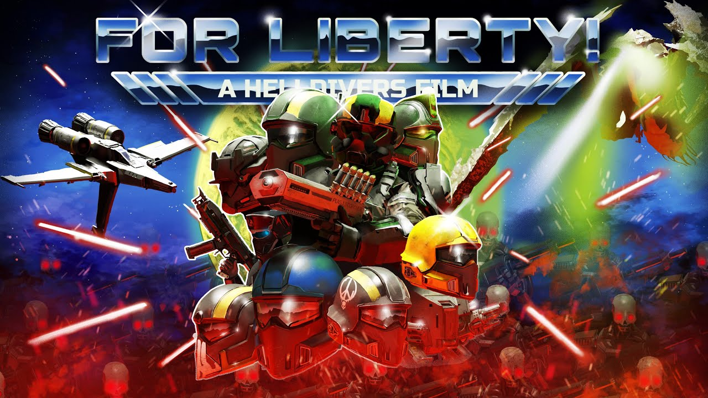

"For Liberty!" is a short film on YouTube made by Plot Coalition, entirely in Unreal Engine. It follows Sergeant Isa Cruz as she is assigned to Judgement squad and is sent to investigate secret Automaton experiments on Terminids. They fight through the resistance of bugs and bots as she uncovers a hidden truth.
You can watch the film here:
https://youtu.be/M7nXj34kwIg?si=YpOQWexEmop6-r8a 